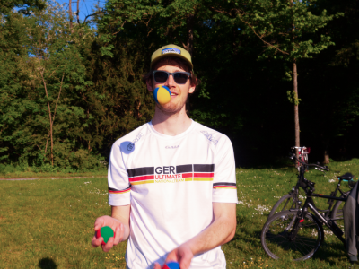

Willkommen!
Studium am KIT
Ich studiere Mathematik und Informatik am KIT. Material zu ein paar Vorlesungen habe ich auf GitHub zur Verfügung gestellt:
Meine Bachelorarbeit habe ich am H²T geschrieben. Wer mal reinlesen möchte, findet sie hier.Zum Thema Schule sammle ich auch Beiträge.
Sonstiges
- ATIS - Manual
- Test area, user=user,pw=0x8e743269^sqrt(7+2)^(-1)